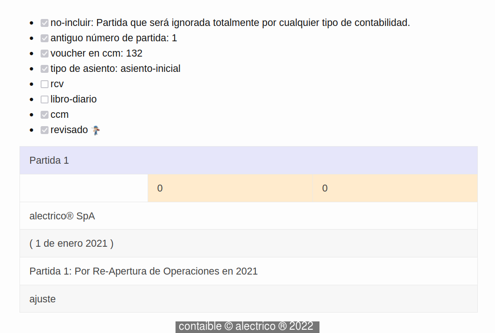
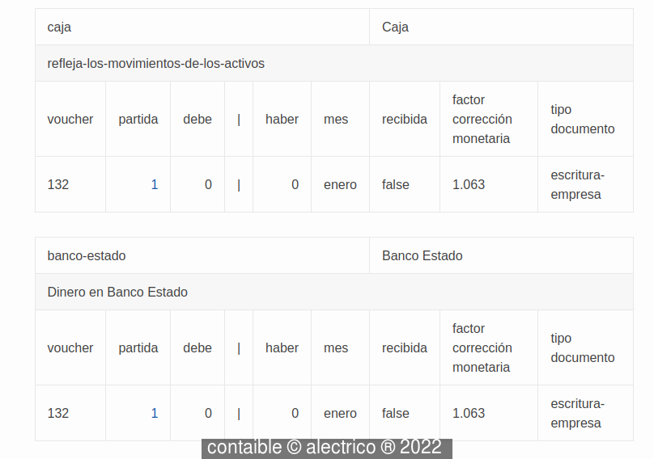

Back to Business
La contabilidad de una empresa es un conjunto de registros permanentes de los movimientos financieros en los que esta empresa haya participado durante un año.
El tipo de registro más importante se llama Partida y consiste en una anotación breve y suficiente sobre alguna información financiera que sea importante para el funcionamiento de dicha empresa. Esta información se elabora principalmente para dar a conocer cómo funciona financieramente la empresa mientras se encuentre en su operacíón normal. No sirve si la empresa ya está intentanto terminar su funcionamiento.
Veamos entonces la partida sin números .

Esta partida es lo mismo que escribir:
*La empresa alectrico Spa Re-aperturó (es lo mismo que reabrió pero suena más cool) operaciones el día 1 de enero de 2021 lo que consta en la Partida 1 de ajuste de su libro diario"*
Esta partida está en el Libro Diario
Trazabilidad
Las partidas son el equivalente a escribir a mano sobre temas financieros. Hemos visto que todavía se escibe a mano en los negocios más pequeños, pero la tecnología existente en Chile garantiza que las transacciones financieras más comunes como las de compra y venta sean registradas automáticamente.
Un requisito importante para llevar la contablidad es que sea elaborada a partir de registros fidedignos de actividades económicas y que Ud. siempre pueda encontrar esos registros, con mayor razón si piensa que irán a revisar el funcionamiento de su empresa. Eso significa que hay que anotar todo, … o casi todo! y que ojalá lo tenga en Partidas. Eso es lo que se conoce como trazabilidad. Sin esta habilidad de su sistema contable será casi imposible que pueda enfrentar una fiscalización con éxito.
Visita al Libro Mayor
Hemos revisado la estructura partida que es la base del Libro Diario y la pieza clave que otorga veracidad a toda Contabilidad. Ahora le sugiero que siga este link y que presente atención a la estructura en tablas con que se topará.
Vea Ud. que hay más de una tabla. Los encabezados de cada tabla son los siguientes:
- caja
- bancoestado
- materiales
- ppm
- iva-credito
- marca-alectrico
En cada tabla se repite la fila con la celda correspondiente a la columna partida con el valor 1. Ese valor es un link a la partida 1. Asi que una tabla en el Libro Diario es capaz de generar varias tablas en el Libro Mayor. La Partida 1 no es capaz de generar tablas con valores diferentes de cero, porque está en un estado especial de no inclusión.
El Libro Mayor está estrechamente relacionado con una estructura muy importante denominada cuenta. Cada cuenta está relacionada con una realidad financiera, así la cuenta llamada caja refleja la entrada y salida de billetes, monedas, cheques y demás equivalentes de efectivo. La cuenta banco-estado refleja los cargos y abonos a la cuenta bancaria en el banco llamado “Banco Estado”. La cuenta materiales representa el valor de los materiales que se adquieren o se venden. La cuentas ppm y la cuenta iva-creditos manejan temas de impuestos. La cuenta marca-alectrico refleja el valor del activo intangible marca alectrico.
Nos gustaría que Ud. apreciara la capacidad que tiene el Libro Mayor para obtener y luego mostrarnos otra forma de ver la realidad financiera de una empresa. Vea en la foto siguiente que la idea parece ser la de tener presentes las cuentas más que las partidas que le dieron origen.

En este ejemplo todas las cuentas que se ven en las tablas del Libro Mayor tienen que ver con la Partida 1, por lo que tienen un link hacia dicha partida, es el numero 1 que Ud. ve.
Trazabilidad en Acción!, el sistema Contaible informa con qué cuentas tiene relación la partida y para no generar problemas con los totales, les coloca un valor de 0. La partida está suspendida en este ejemplo usando un mecanismo propio del sistema Contaible para no considerar las partidas que el Servicio de Impuestos Internos o Ud. mismo hayan declarado como no-incluidas allá en el otro sistema informátido del Gobierno.
No hay otras cuentas ahora en el Libro Diario que no tengan que ver con la Partida 1 pues no hay más partidas ingresadas. Eso cambiará en los otros ebooks de esta serie.